Cracking Ice & See What I Say?
January 4–15, 2023 — Macleay Valley Community Art Gallery, Gladstone NSW

Room 1 — Cracking Ice
How frozen I became and powerless then,
Ask it not, Reader, for I write it not,
Because all language would be insufficient.
I did not die, and I alive remained not;
Think for thyself now, hast thou aught of wit,
What I became, being of both deprived.(Dante: Divine Comedy, Inferno: Canto XXXIV, where Dante and Virgil have reached the centre of frozen Hell and people are immobilised in ice.)
Cracking Ice describes the artist searching for release from a stubborn lethargy. Traditional drawing, Dada techniques, sporadic accidents, recombining, collages, apophenia, whims and contrivances are used to escape the solidity of procrastination and indecision known as “creative freeze”. Unexpected outcomes illustrate the process of a slow thaw, and direct the intuitive flow that is initiated.
Procrastinate…… make a decision — impulsive or deliberate…… surrender to decision…… choose materials…… choose process…… proceed freely…… excitement…… enthusiasm…… congratulate self…… doubt self and decisions…… procrastinate…… repeat steps
Usually my creative process goes something like that. Until it stopped. And then there was nothing. No thoughts, no desires, no reason. Despair.
Solution: force action.
1. Saving Flowers
Feel relief seeing flowers — escape into the perfect forms, colours, scents, ephemerality. Draw flowers from life, moving my view point, using ink and brush on paper.
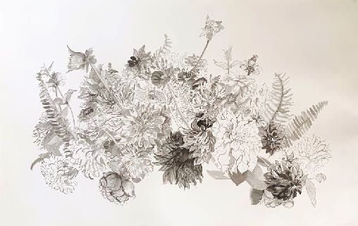
2. I Don’t Like You But I Love You (Omega/Love)
I copied Michelangelo’s baby Jesus from Doni Tondo
adorned with flowers from my garden
added my self-portrait behind
a dingo rolling on its back
compositional decisions — an oval and a circle
dog pisses on distorted doni tondo
Vitruvian man’s head is displaced by a flower
change circle to Omega symbol
balance tonally
add gum flowers that look like corona virus
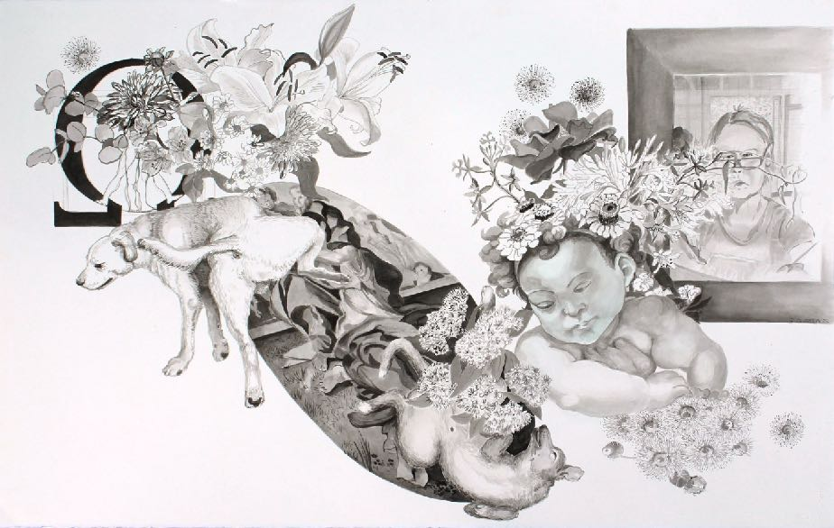
3. Floating and Sinking with Tibor Gergely
Remembered favourite story book illustrations from childhood.
Tibor Gergely was a Jewish immigrant to the USA from Europe on the brink of WW2. He worked as an illustrator for Little Golden Books bringing to life best-selling children’s stories such as Tootle, The Little Red Caboose, and Scuffy the Tugboat. He painted his landscapes and characters in an unconventional style. From Scuffy the Tugboat I took the images of the flooded river and added my own distressed characters, and also the cows which float on islands of earth; from Tootle I drew the little train exploring off the tracks and added my own face onto the wayward engine, tormented by mosquitos.
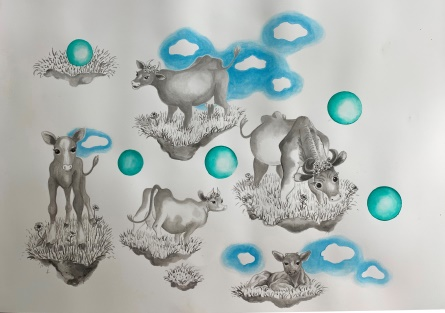
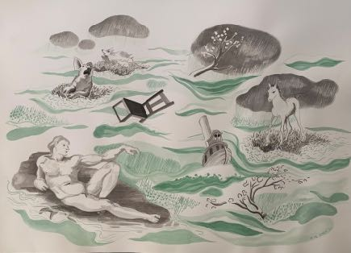
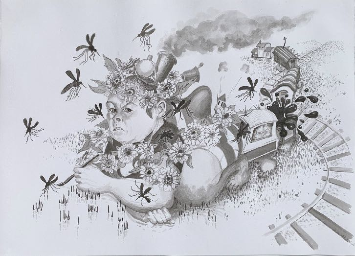
4. Self Portrait with Broken Wing
Ink splash. Half a face and upper torso appeared. I supplied the other half completing a self-portrait, then defined the apparent broken insect wing on the head.
Sunflowers on my work desk called out to be added which I did tentatively on separate paper at first then directly onto the artwork. The Russian/Ukrainian war screamed its presence. A discarded study of sunflowers was cut up, thrown down and glued on to the artwork like the detritus of war.
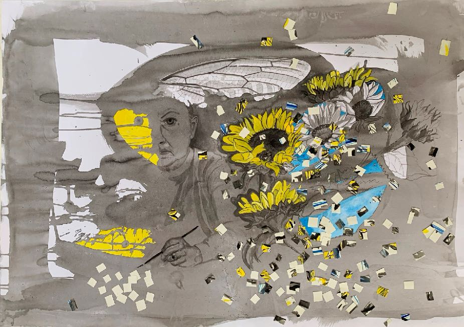
5. Between Faith and Disbelief
A line from a book called The Sufis by Idries Shah says “It is only here, in this narrow strip between faith and disbelief, that the truth is to be found”.
Object: to find “truth”. Method: Experimental Dada Technique — an irrational method for making an artwork following instructions randomly obtained. This method breaks the logical way of developing an artwork (based on a continuum of choices) by following a path chosen by an outside and disinterested agent/force/influence/machine — leaving the creation to chance. The method gives surprising and often serendipitous outcomes. It can be used to break out of familiar, repetitive and predictable art making processes and results.
Use pink (magenta) ink to represent faith and black ink for disbelief.
Throw down ink onto wet (or not) paper to form random stains.
Search for “truth” in gaps between pink and black ink.
Cut into strips and weave together.
Abandon hope.
Start at beginning.
Search for truth in gaps.
Give up and tear sheet of stained paper into pieces.
Pile into a stack.
A few days later…
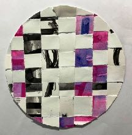
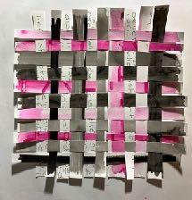
Take the first book I see that looks pink — a Roy Lichtenstein catalogue — and open the book randomly: “Art is what you will it to be, one must rise above one’s own taste, sometimes.” — Leo Castelli, 1962. Flip pages of the catalogue and place a finger on random words without looking. Write each “found” word onto a scrap of the stained paper pieces I ripped up before. Stick pieces of torn up paper onto a backing sheet in the order that they come off the pile. Interpret images suggested and use words written on that section to direct the art making process. Remember the Lichtenstein influence.
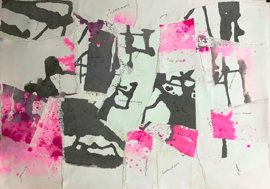
A vaping soldier sitting in a tank appears so I go with that theme, using prompts that surround the image: all digital, handcrafted, sculptures. I make 2D images and digital printouts mounted onto foamcore, cut and fold paper, and papier mache combined into 2 and 3D artworks.
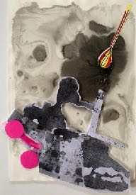
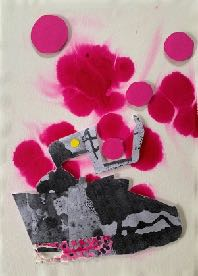
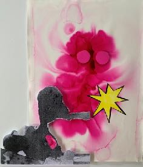
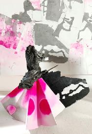
I recognise a figure either looking closely in a mirror or making a “thumbing the nose” gesture. The instruction written on that section is retrospectively. I print mirror images of the figure and place them back to back on a retrieved sheet of pink ink stained paper. Lichtenstein stars explode between them. Do the fop-haired characters look behind them in a mirror (retrospectively) or are they making rude gestures at each other’s backs?
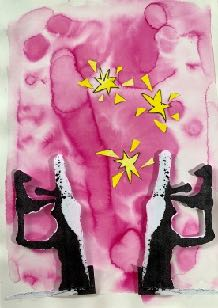
Next there is Putin with an eagle rising off the load carried on his back. “Further” looks like “Fuhrer”. Printed mirror images become a devil face. It stands alone on a throne of ink soaked toilet paper roll.
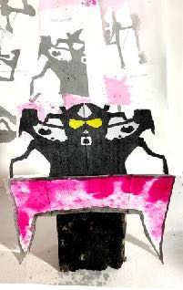
The focus on war is becoming depressing so I turn the collage up the other way to let the negativity drain off. There is a tree and a chair like where I sit and contemplate beside our dam. Away from it all.
6. Joining Faith and Disbelief
I want to combine chaos and order in my drawing.
I Google “Joining Verbs” and get: Linking verbs are verbs that serve as a connection between a subject and further information about that subject. They do not show any action; rather, they “link” the subject with the rest of the sentence… No, that wasn’t what I meant: “being words” would not serve to develop the process. I ignore the prompt — too soon.
More obviously, I layer them over each other, first splashing ink over a flower drawing, then drawing flowers over ink splashes. Taking a back seat as the graphic and abstract imagery come together on the page, I draw, splash, rip and layer.
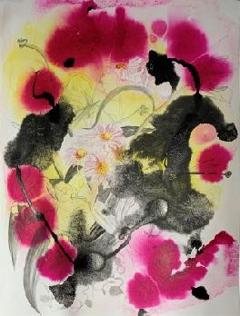
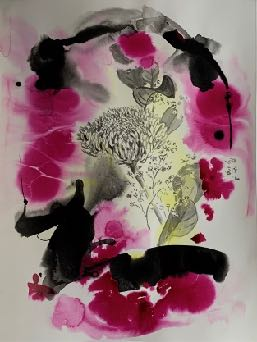
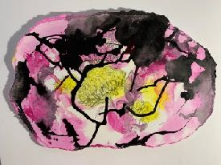
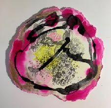
7. Art is a Doing Word: Seated Foal, Blue Foal, Floating Cows and Pig
The idea of “being words” lingers. From storage boxes I retrieve old artworks to reuse and reactivate; to collage with recent discarded drawings of flowers and horses. I push the limits — layer up — chaos on chaos. I go too far and try to salvage… making islands.
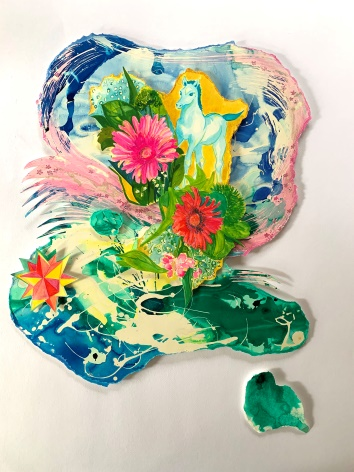
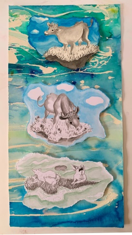
8. Experimental Self Portrait with Golden Roses: Art is a Being Word
I feel a need to make a magenta oval splash. I find facial structure by pareidolia in splash runs. I add facial features. I make a black ink oval splash and cut it out to surround, then adorn with golden roses.
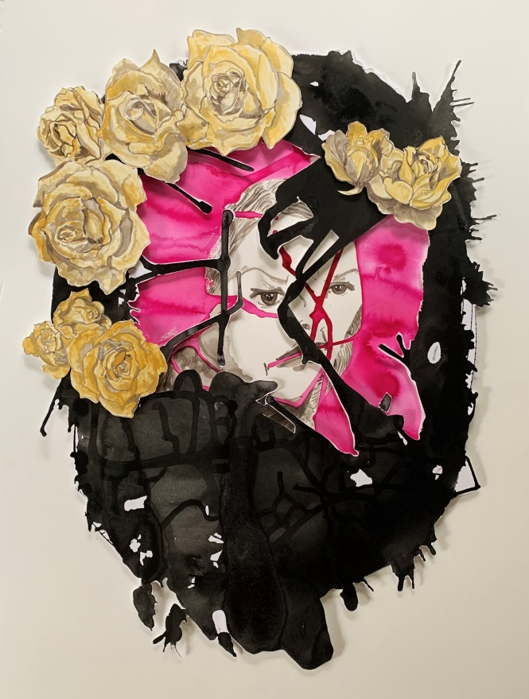
9. Art is a Being Word: Melt and Flow — Talking with the Poet, Wayt with Strangers, Tourist, Overflow
I become engaged in this combination of expressions and surrender to the force of flow.
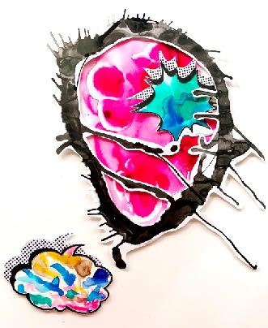
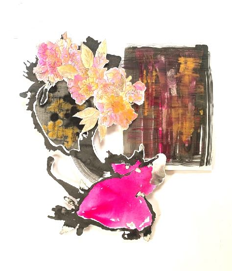
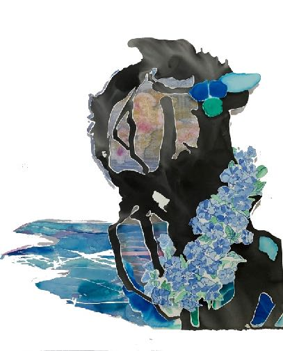
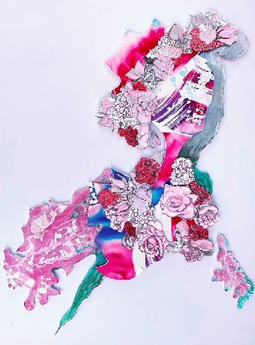
Room 2 — See What I Say?
Apophenia is the result of the human tendency to find meaningful patterns in random stimuli. This includes pattern making in sound such as hearing voices in birdsong or white noise, making sense from randomised words, and finding images in visual chaos, which is called pareidolia. Examples of pareidolia include finding animal shapes in clouds, or faces in the bark of trees. The amount of pareidolia a person experiences varies depending on the personality traits of sex differences, developmental factors, neuro developmental conditions, belief in the paranormal, and individual creativity. This is consistent with psychological explanations of visual perception and the amount of influence that past experience and stored information has on it: “we actively construct our own perception of reality.”
The process itself is well recorded in history — constellations were, and still are, named after joining the dots of stars to create objects such as the Big Dipper and animals like Leo the lion. This quality has been used by artists throughout history, the most famous being Leonardo da Vinci who wrote in his notebook: ‘If you look upon an old wall covered with dirt, or the odd appearance of some streaked stones, you may discover several things like landscapes, battles, clouds, uncommon attitudes, humorous faces, draperies, etc. Out of this confused mass of objects, the mind will be furnished with an abundance of designs and subjects perfectly new.’ William Kentridge explores a similar concept of creating imagery in (Repeat) From the Beginning/Da Capo where a recognisable image in a mass of fragments of paper becomes visible as a shadow produced from only one point of view. Making images from inkblots, called Klecksography, was a popular childhood game for psychoanalyst Rorschach. The well-known and controversial Rorschach Inkblot method of psychoanalysis has used this technique as a tool to study personality and emotion since the 1890’s.
Confirmation bias is “the tendency to search for, interpret, favour, and recall information in a way that confirms or supports one’s prior beliefs or values.” People tend to ignore contrary evidence if it fails to support their own beliefs. This bias can combine with pareidolia (as evidence) to skew perceptions, reinforce prejudices, and support conspiracy theories.
10. The Fox, The Chief and the Hunter
While researching the game “Scissors, Paper, Rock” for a group exhibition in 2015, I found the Japanese original Kitsune-ken — The Fox, The Chief and the Hunter. I began by making ink prints using scissors, rocks and water on a paper ground and then started to draw out the imagery from the chaotic stains. I noticed how easy it was to find some of the imagery I needed — there was an abundance of foxes in the varying tones of all the background washes. I was also astonished at how precisely some of the internet and printed reference images I found fitted into these backgrounds. For example an image I found of a traditional Japanese man fitted neatly into the varying tones of one background wash. Other images from my memory popped from each background such as Lichtenstein’s “Blam”. Images I found for reference such as traditional Japanese patterns appeared to have already been “started” by chance in some of the underlying washes. I enhanced the apparitions using watercolour, ink and gouache and a little collage.
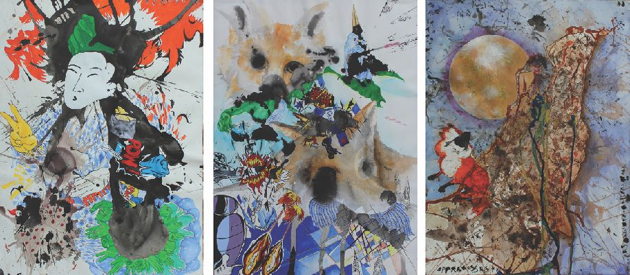
11. White Lion
I later tested this observation by squashing ink between two sheets of paper, first deciding to see a white lion in the ensuing stain. After a couple of days straining to find the lion and at the point of considering the experiment a failure, I began to roll back the top sheet of paper and suddenly the paws, legs, body and head of the white lion revealed itself.
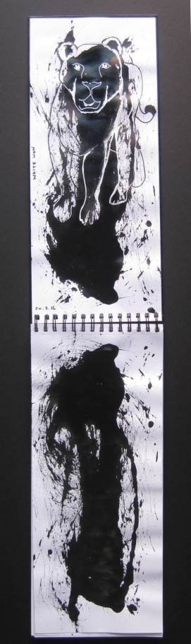
12. Words Beneath
I experimented, choosing random phrases and words which I stencilled in masking fluid onto a paper background. I splashed ink across the surface then removed the mask. All of the words prompted images in the ink stains. Other interesting details were revealed in alternative readings of the texts.
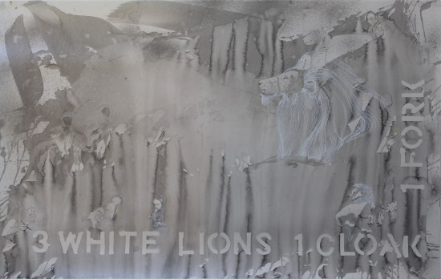
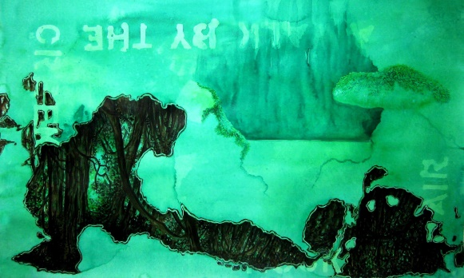
13. Surrender: Three Backgrounds
I asked three young art students to make random marks in white on a black paper background, and then asked nine friends, giving no explanation, to supply three words each. These words I systematically grouped in sets of three according to time of arrival and their order in the list. The images suggested were then found and drawn onto the chaotic backgrounds.
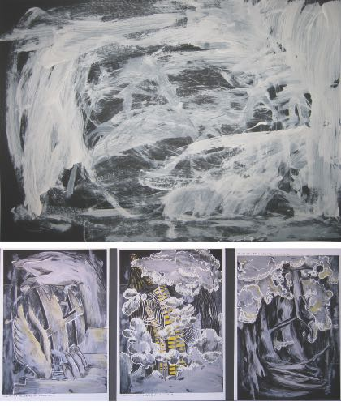
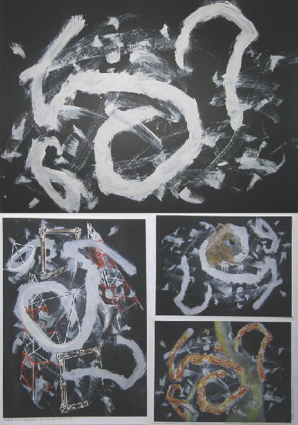
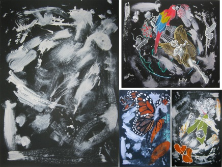
14. Santa and the Reindeer, Cats in Surgery and Mickey San
Spontaneous fantastical pareidolic images appear, bubbling through from the subconscious onto the splashed ink.
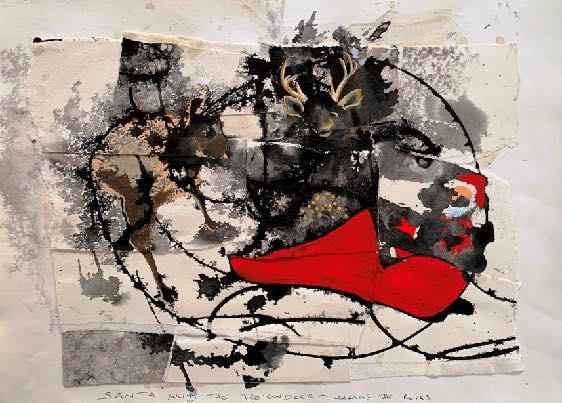
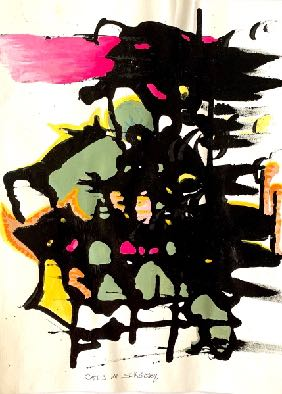
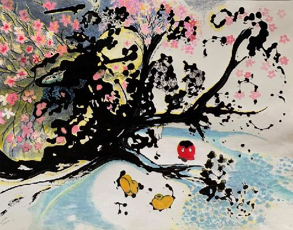
15. Japanizi
A visit to Japan in 2018 increased my ability to relate tonal backgrounds to my documented and remembered store of imagery around the experience. Like Japanese Hatsuboku ink-splash drawing, a space is created to connect with “divine inspiration” to form imagery in the ink stained paper.
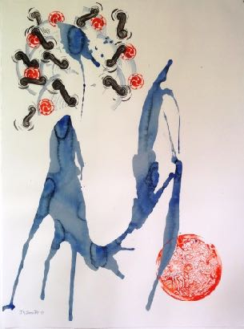
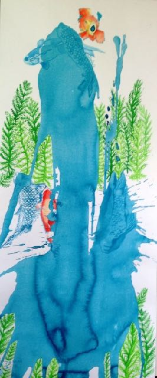
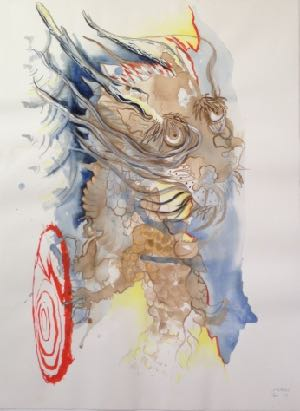
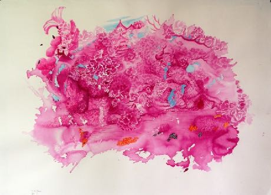
After immersing himself in legends of valiant knights, Don Quixote was certain that windmills he saw were giants for him to overcome. “What does the windmill represent in Don Quixote? The windmill represents imaginary enemies. More broadly, it represents our potential for misguided fights that we romanticize or idealize in our minds.”
16. Retreat: Becoming the Forest
Retreat: Becoming the Forest (2019/20) combines body forms with reflected landscape in forest creek pools, and references Animism. Visual camouflage blurs bodies in the landscape — the obvious becomes hidden.
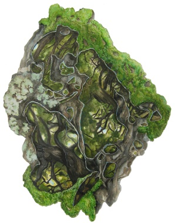
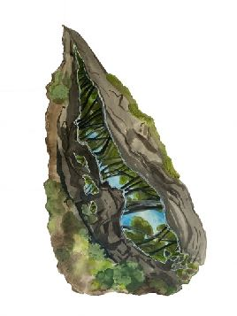
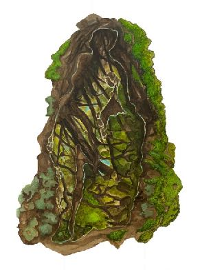
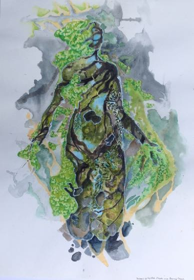
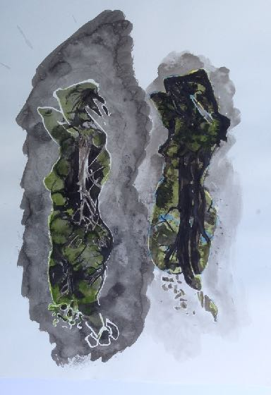
17. Giraffosaurs in the Landscape (Elephant) and To Those That Went Over the Cliff
Spontaneously perceived metaphors of contemporary (2020) social, political and environmental catastrophes embedded in my sight.
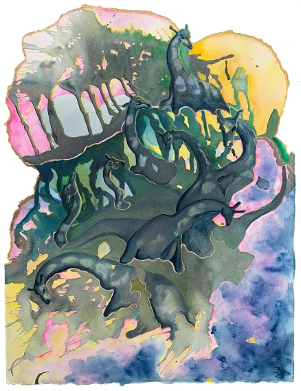
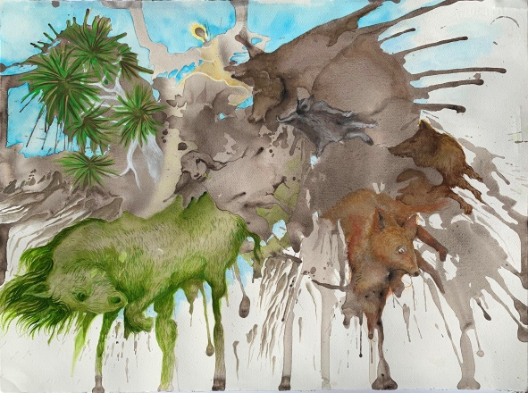